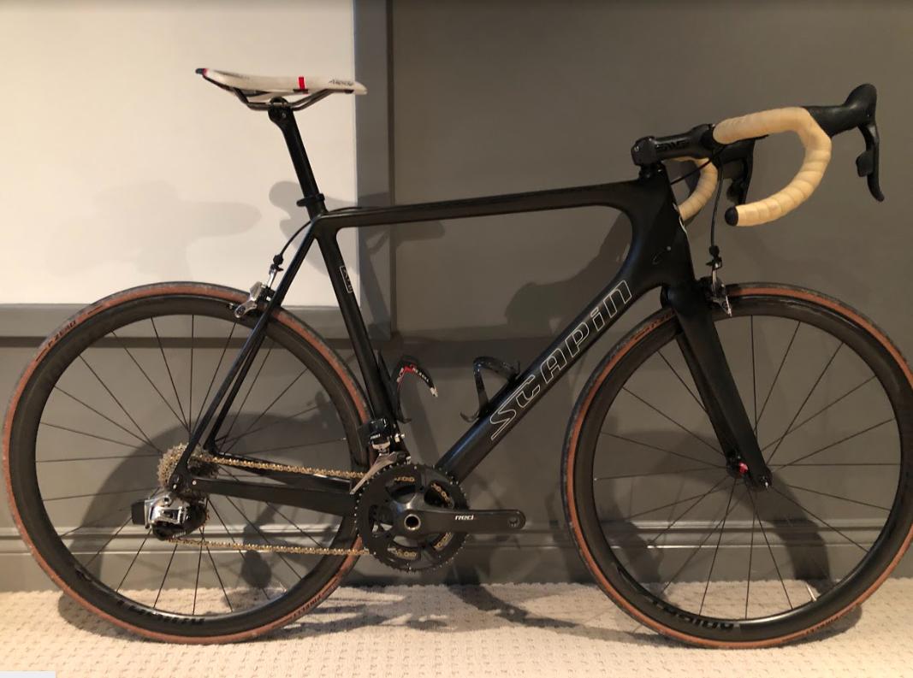
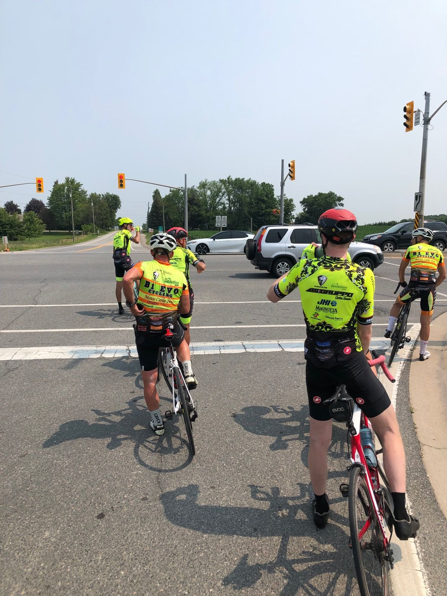
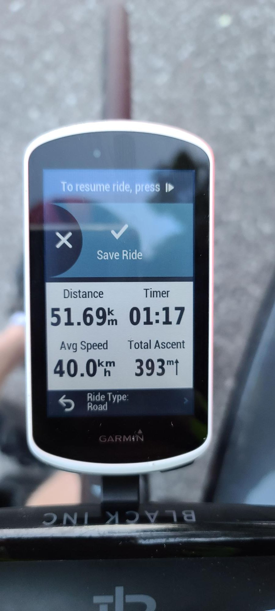

2021 was a crazy year, but for me it was year of growth. I had more time with lockdowns which allowed me to try so many things are become better at things I wanted to improve at. There are so many great memories from this year, but below are my favorite moments from the entire year! Can't wait for more to come next year!
On November 7th, I completed my first bike race with over 80 participants, finishing top 10 with a blistering 37kph average speed! This has to be my favorite memory of the entire year. This race would one of few races that happened this year because Covid restictions. By joining this race I was able to see how I stacked up agaist some of the top cyclists in Ontario. The race was a great reminder that I am still not that strong, and still need to continue to train. Besides that I am extremely proud of my first race and beat some big names that day.
Below is the bike that I use. It is a size 58cm Scapin ltd SL road bike. This ltd is limited edition, only 20 produced. Scapin is the name of the brand. Scapin is an Italian brand that is pretty small. The SL represents "Super Light" meaing it is a climbing bike weighing only 6.9kg or 15.2LBS. The rims in this picture are my racing rims from Knight Composites. Knight is also a pretty small company but they make quailty rims. The componants on the bike are very fitting for a climbing bike, with Sram Red Etap. Click on the frame or the wheels in the image below to find out more.
On July 18th, I completed my longest bike ride ever! A total of 176km and over 2000m of elevation, more than 1% average grade. We completed the ride at a respectable 33kph average speed. Started in King City going out towards Orangeville. After completing the ride, I had so many different emotions. My legs were very sore and tired, but at the same time I was so happy I didn't give up and completed the route. I am really proud that I completed this route, I cannot wait for next year. So excited to see what is to come!
Every Tuesday, we complete this route. However this week was speical. We achieved a 40kph average! This is number is enough to make any cyclist proud, even a dream for many. This ride was extremely challegening, pushing it to the rivot.
